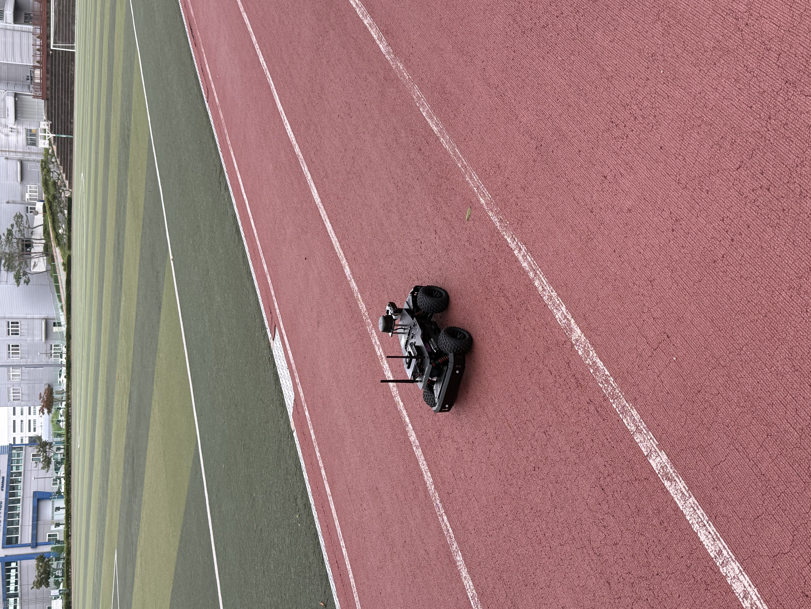
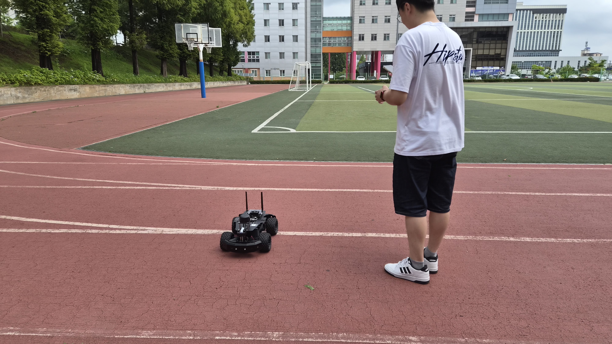
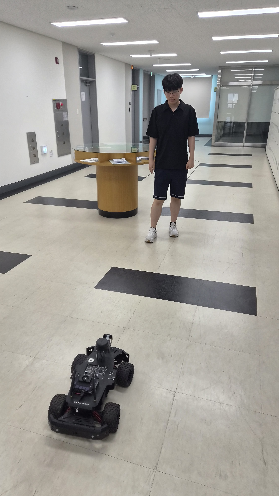
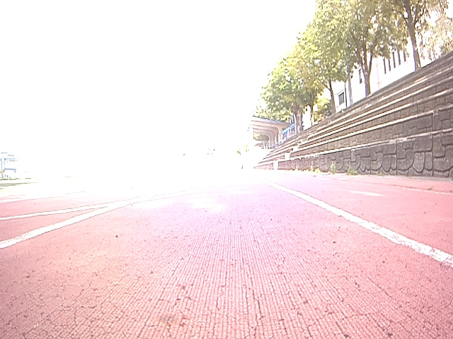
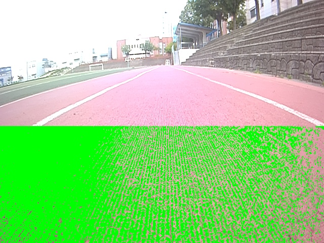
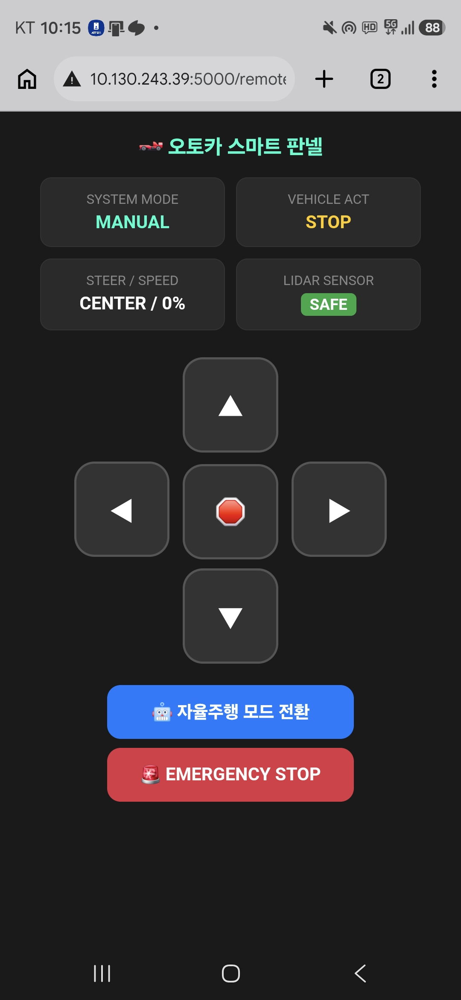
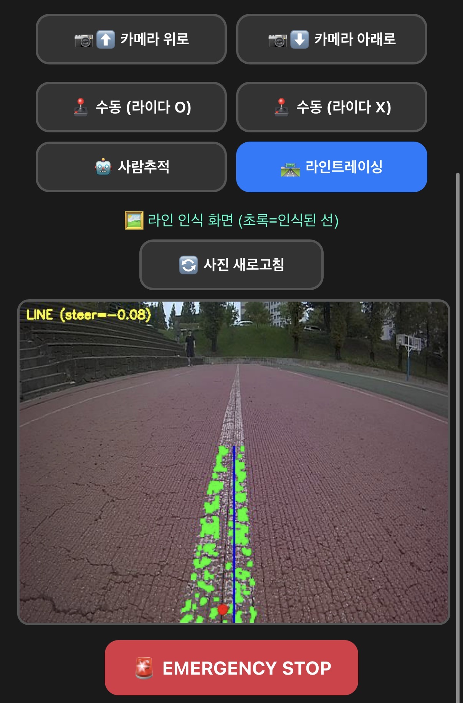

YOLO 객체 탐지 및 OpenCV 라인트레이싱 통합 구현 보고서
키보드 방향키(◀ ▶) 또는 스페이스바로 넘기며 확인하세요.
제한된 카메라 자원(1개)을 효율적으로 활용하기 위해 모드 전환 방식을 채택했습니다.
| 구분 | 사람 따라가기 (AUTO) | 라인트레이싱 (LINE) |
|---|---|---|
| 사용 기술 | YOLOv3-tiny + TensorRT | OpenCV 영상처리 |
| 연산 주체 | GPU (가속) | CPU |
| 판단 원리 | 학습 모델 (복잡한 대상 구분) | 밝기/모양 (선의 x좌표 계산) |
| 장단점 | 정확도 높음 / 자원 소모 큼 | 가볍고 빠름 / 조명 취약 |

정확한 YOLOv4 대신 가벼운 YOLOv3-tiny를 채택하고 TensorRT로 최적화하여 탐지 속도를 6.0 FPS에서 30.1 FPS로 5배 개선했습니다.

처리가 느려질 때 과거 화면이 출력되는 현상을 발견, GStreamer에 오래된 프레임을 버리는 옵션을 추가하여 실시간성을 확보했습니다.


파이썬 GIL 제약으로 인해 하드웨어 통신 중 프로그램 전체가 프리징되는 치명적 버그가 있었습니다. 라이다를 완전한 독립 프로세스로 분리하고 감시자 구조를 도입해 생존성을 확보했습니다.

